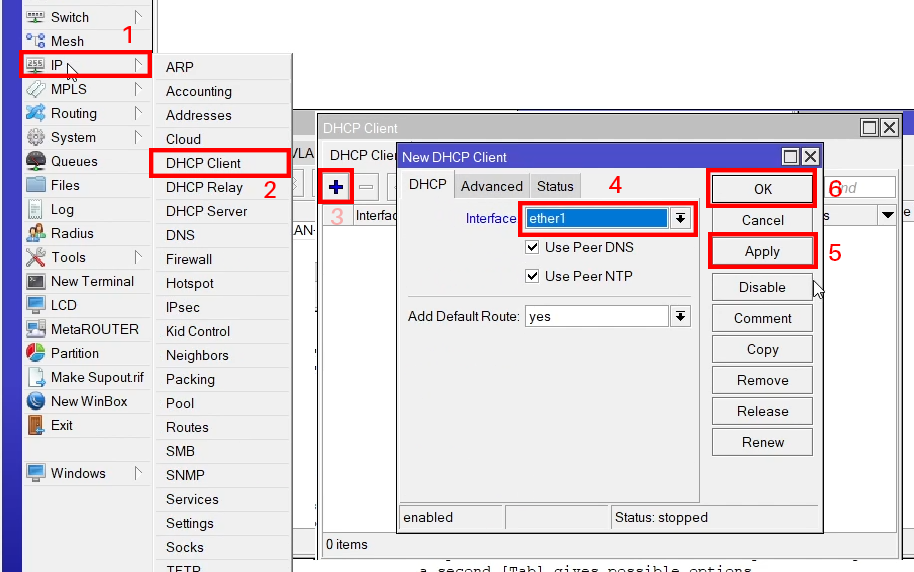

Topologi
Langkah Percobaan
- Sambungkan kabel UTP dari Switch ITS ke Router 1 pada interface ether1
- Sambungkan kabel UTP dari Laptop 1 ke Router 1 pada interface ether2
- Buka aplikasi WinBox dan lakukan koneksi ke Router 1
- Seting DHCP Client pada Router 1 agar Router mendapatkan IP secara otomatis dari Internet ITS. Atur pada tab IP > DHCP Client > + > dan pilih interface yang terhubung pada Switch ITS, yakni ether1
- Lakukan uji coba ping ke 8.8.8.8 untuk memastikan Router 1 sudah terkoneksi ke internet. Dapat dilihat bahwa Router 1 sudah terhubung ke jaringan luar.
- Buat Jaringan Lokal untuk Router 1 dan Laptop 1, yakni dengan cara nemambahkan IP Router 1 ether2, pada tab IP > Addresses > dan tambah IP. IP yang digunakan adalah gabungan IP dari angka akhir NRP praktikan, yakni 4.13.33.1 /24
- Seting DHCP Server pada Router 1 ether 2 agar laptop yang terhubung bisa mendapatkan IP secara otomatis untuk membentuk jaringan lokal. Atur pada tab IP > DHCP Server > DHCP Setup. Pilih interface yang terhubung ke Laptop 1, yakni ether2. Kemudian atur jaringan pada 4.13.33.0/24, Default Gateway 4.13.33.1, Range dari 4.13.33.2 - 4.13.33.254, dan DNS default yang dimiliki internet ITS.
- Pastikan Laptop 1 sudah mendapatkan IP dengan mengetikkan 'ipconfig' pada Command Prompt (CMD). Dapat dilihat Laptop sudah mendapatkan IP yakni 4.13.33.253 /24
- Selanjutnya, agar Laptop 1 yang berada pada jaringan lokal dapat terhubung ke jaringan publik, dapat digunakan layanan NAT yang akan mentranslasikan IP lokal beserta port perangkat agar dapat terhubung dengan jaringan publik. Atur NAT pada tab IP
- Kemudian lakukan uji coba ping ke 8.8.8.8 untuk memastikan Laptop 1 sudah terhubung dengan jaringan luar. Dapat dilihat Laptop 1 sudah dapat berkomunikasi dengan jaringan luar.
- Selanjutnya lakukan uji test bandwidth sebelum dibatasi, dapat menggunakan website speedtest.net. Dapat dilihat sebelum dibatasi kecepatannya sekitar 92 Mbps.
- Kemudian untuk membatasi bandwidth, dapat dilakukan pada tab Queues > + > beri nama yang diinginkan, dan pada target isikan dengan IP Address perangkat yang ingin dibatasi bandwidthnya, pada kasus ini adalah Laptop 1 dengan IP 4.13.33.253. Pada Max Limit, isikan dengan 10M. Max Limit adalah batas maksimal yang akan didapatkan perangkat. Kemudian beralih ke tab Advance, pada Limit At, isikan dengan 5M. Sehingga jika router terhubung ke banyak perangkat, bandwidth akan dibagi ke masing-masing perangkat secara merata dengan bandwidth minimal 5Mbps dan maksimal 10Mbps.
- Lakukan uji test bandwidth kembali untuk mengecek apakah bandwidth perangkat sudah dibatasi. Dapat dilihat bandwidth yang diterima perangkat sudah dibatasi yakni sekitar 9Mbps.


> Firewall > NAT > + > pada Chain, pilih srcnat dan pada Out Interface, pilih interface yang terhubung ke jaringan luar, yakni ether1 yang terhubung ke internet ITS. Kemudian pilih tab action dan pilih masquerade pada action.